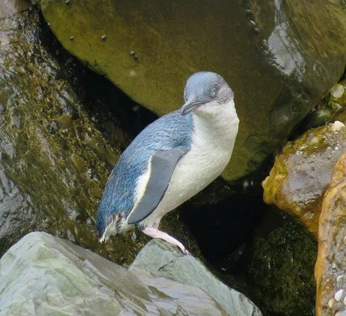

鸟类 · 动物界
小蓝企鹅 Eudyptula minor

世界上最小的企鹅，背部蓝灰色、腹部白色，身高不足 40 cm，夜间成群返回澳大利亚和新西兰的海岸巢穴。
- 分类
- 门脊索动物门纲鸟纲目企鹅目科企鹅科属小蓝企鹅属
- 栖息环境
- 澳大利亚南部和新西兰的海岸岩礁、沙滩与海岛，巢穴多在岩缝或沙洞中
- 地理分布
- 澳大利亚南部和新西兰海岸，中国无分布
- 保护级别
- IUCN 无危（LC）；非中国分布物种
物种志
小蓝企鹅体长 30–40 cm，体重 1–1.5 kg，是世界上最小的企鹅。它的背部呈蓝灰色，腹部白色，喙深灰色，眼睛浅色，头部和背部颜色在阳光下泛出蓝色光泽，因此得名“小蓝企鹅”。
小蓝企鹅分布于澳大利亚南部和新西兰的海岸，栖息在近海的岩岸、沙滩和海岛，夜间上岸回到巢穴，白天出海捕食小鱼、乌贼和磷虾。它们常在岩石缝隙、沙洞或人工巢箱中筑巢，每窝产卵 2 枚，孵化 35–40 天。黄昏时分，成群的小蓝企鹅摇摇摆摆地走回巢穴，是澳大利亚菲利普岛等地著名的生态景观。目前小蓝企鹅被列为无危物种，但局部种群受人类活动和外来天敌影响。
形态与习性
- 食性小鱼、乌贼和磷虾
- 体长30–40 cm
- 体重1–1.5 kg
- 繁殖每窝 2 枚卵，孵化 35–40 天
- 特征背部蓝灰色，是世界上最小的企鹅
- 寿命野外约 10–15 年
趣味知识
- 小蓝企鹅是世界上最小的企鹅，身高不足 40 cm。
- 黄昏时成群的小蓝企鹅会摇摇摆摆走回海岸巢穴，是著名的生态景观。
- 它的背部呈蓝灰色，在阳光下泛出蓝色光泽，因此得名。